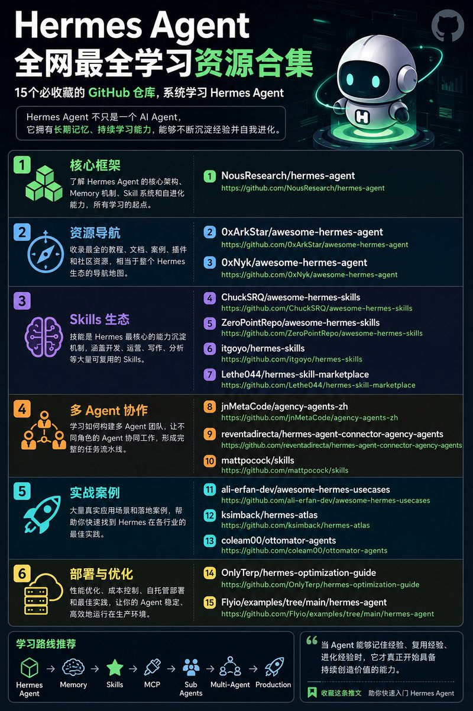

X STATUS · HIGH DENSITY CARD
Hermes Agent 学习资源：15 个仓库串成一条路线
从 Smartpig 的 Hermes Agent 资源帖重排为系统学习地图，覆盖核心框架、Skills、多 Agent、实战案例与部署优化。
Source: https://twitter.com/Smartpigai/status/2062002123592917130
@Smartpigai作者
78点赞
19转发
0回复

01
一句话结论
这条帖不是链接堆叠，而是一条 Hermes Agent 学习路线：官方框架 → 资源导航 → Skills 生态 → 多 Agent 协作 → 实战案例 → 部署优化。
02
六组学习地图
核心框架
先理解 Hermes 为什么是长期协作系统。
资源导航
用 awesome 仓补齐教程和案例。
Skills 生态
学习能力如何沉淀为可复用流程。
多 Agent
从单 Agent 升级到角色网络。
实战案例
寻找内容、自动化、研究、开发落地入口。
部署优化
补成本、性能、自托管和生产稳定性。
03
15 个仓库入口
01 NousResearch/hermes-agent核心框架：架构、Memory、Skill、Sub Agent、自进化。
https://github.com/NousResearch/hermes-agent
https://github.com/NousResearch/hermes-agent
02 0xArkStar/awesome-hermes-agent资源导航：教程、案例、插件、社区资源。
https://github.com/0xArkStar/awesome-hermes-agent
https://github.com/0xArkStar/awesome-hermes-agent
03 0xNyk/awesome-hermes-agent第二份导航：用于交叉补全学习入口。
https://github.com/0xNyk/awesome-hermes-agent
https://github.com/0xNyk/awesome-hermes-agent
04 ChuckSRQ/awesome-hermes-skillsSkills 清单：开发、运营、写作、分析。
https://github.com/ChuckSRQ/awesome-hermes-skills
https://github.com/ChuckSRQ/awesome-hermes-skills
05 ZeroPointRepo/awesome-hermes-skills技能生态集合。
https://github.com/ZeroPointRepo/awesome-hermes-skills
https://github.com/ZeroPointRepo/awesome-hermes-skills
06 itgoyo/hermes-skills个人技能仓，适合看技能结构。
https://github.com/itgoyo/hermes-skills
https://github.com/itgoyo/hermes-skills
07 Lethe044/hermes-skill-marketplaceSkill marketplace。
https://github.com/Lethe044/hermes-skill-marketplace
https://github.com/Lethe044/hermes-skill-marketplace
08 jnMetaCode/agency-agents-zh多 Agent 中文角色库。
https://github.com/jnMetaCode/agency-agents-zh
https://github.com/jnMetaCode/agency-agents-zh
09 reventadirecta/hermes-agent-connector-agency-agentsHermes 与 agency-agents 连接器。
https://github.com/reventadirecta/hermes-agent-connector-agency-agents
https://github.com/reventadirecta/hermes-agent-connector-agency-agents
10 mattpocock/skills高质量 workflow skills 范例。
https://github.com/mattpocock/skills
https://github.com/mattpocock/skills
11 ali-erfan-dev/awesome-hermes-usecases应用案例索引。
https://github.com/ali-erfan-dev/awesome-hermes-usecases
https://github.com/ali-erfan-dev/awesome-hermes-usecases
12 ksimback/hermes-atlasHermes Atlas。
https://github.com/ksimback/hermes-atlas
https://github.com/ksimback/hermes-atlas
13 coleam00/ottomator-agents自动化 Agent 案例。
https://github.com/coleam00/ottomator-agents
https://github.com/coleam00/ottomator-agents
14 OnlyTerp/hermes-optimization-guide优化与最佳实践。
https://github.com/OnlyTerp/hermes-optimization-guide
https://github.com/OnlyTerp/hermes-optimization-guide
15 Flyio/examples/tree/main/hermes-agentFly.io 部署示例。
https://github.com/Flyio/examples/tree/main/hermes-agent
https://github.com/Flyio/examples/tree/main/hermes-agent
04
推荐路线
Hermes Agent → Memory → Skills → MCP → Sub Agents → Multi-Agent → Production
按这个顺序读，可以避免把 Hermes 误解成“又一个 CLI Agent”。重点是记忆、技能、子代理和持续沉淀。